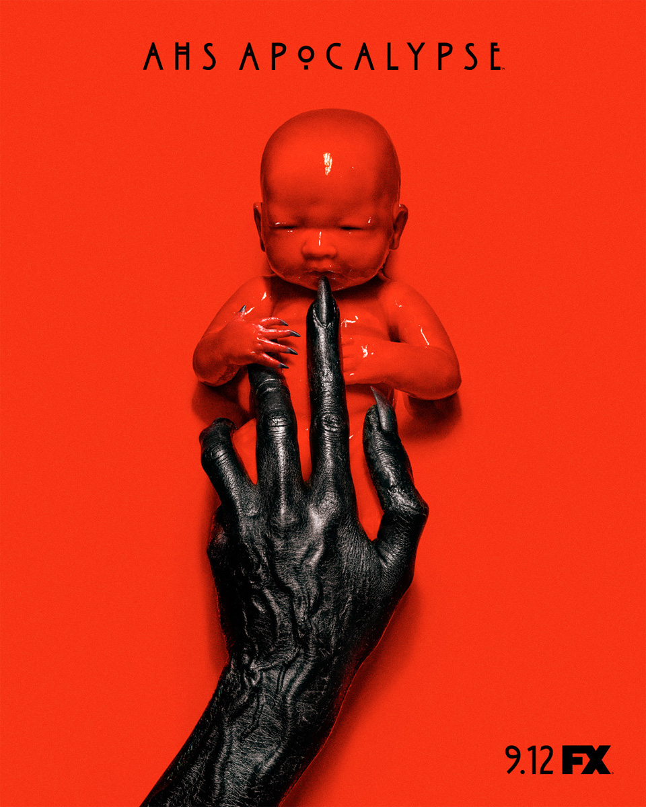
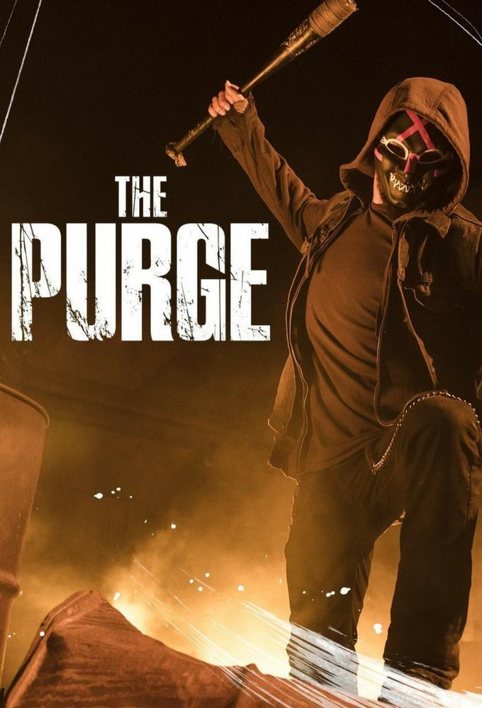
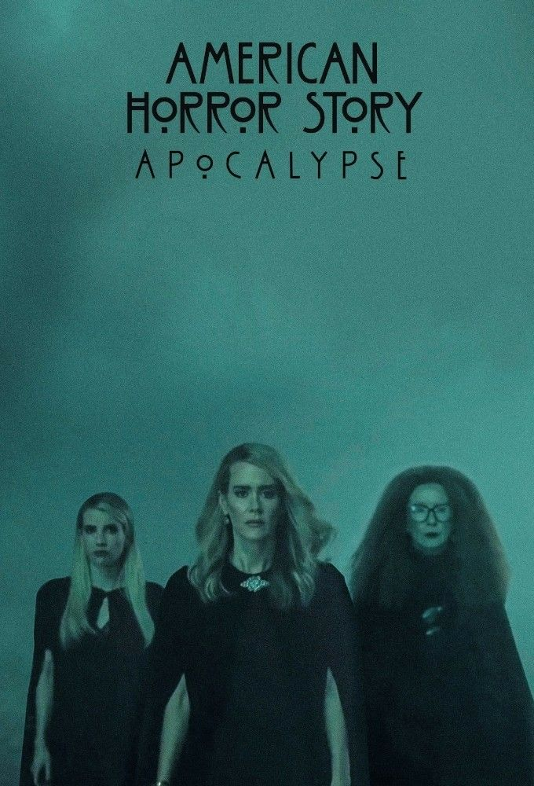
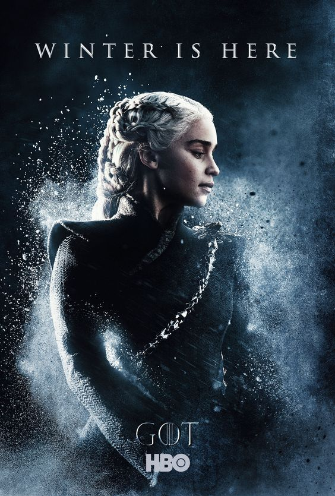
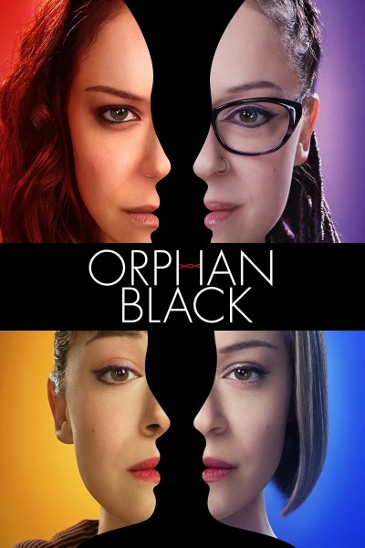
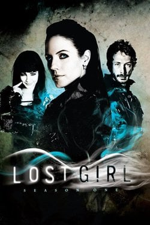
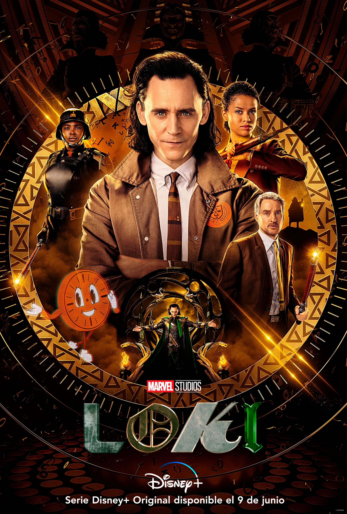
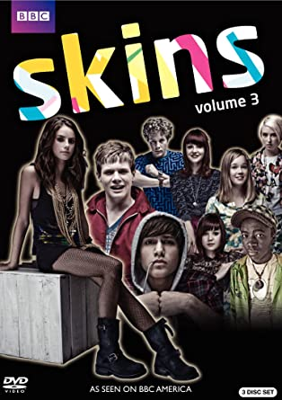
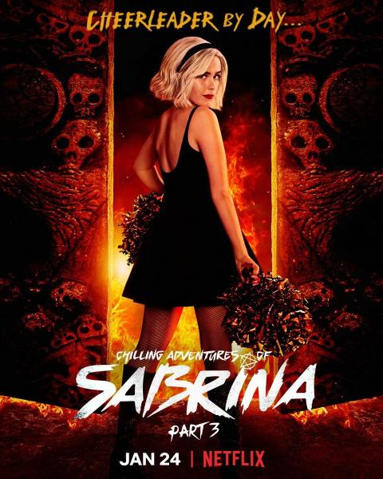
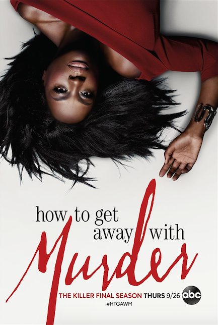

Terror
American Horror Story

Helix
Helix' gira en torno a un grupo de científicos del CDC (Centro de Control de Enfermedades), que
intentan averiguar el estallido de una nueva enfermedad en un centro de investigación del Ártico. Se
desplazan hasta allí para investigar esta enfermedad que podría terminar siendo mortal.
The Purge

Murder House
Murder House es la primera temporada de American Horror Story. La
temporada se estrenó el 5 de
octubre de 2011. Cuenta la historia de la familia Harmon: El psiquiatra Ben, su esposa Vivien y
su
hija adolescente Violet, se trasladan de Boston a Los Ángeles después de Vivien tiene un aborto
involuntario y Ben tiene una aventura con una de sus estudiantes. Los Harmon se mudan a una
mansión
completamente restaurada y pronto se encuentran con los antiguos residentes de la casa, los
Langdon:
Constance Langdon y sus dos hijos, Tate y Addie.
Asylum
Es una temporada sobre un manicomnio, en la cual una reportera va a
investigar sobre rostro en sangrentado un asesino a el manicomnio en la cual la internan
por enterase de cosas del manicomnio
Coven
Se trata sobre brujas , la bruja cordelia hija de la Suprema fiona , decide abrir la
escuela de brujas en la cual se incriben madison, zoe, queenie y nan . Asta que se
inscribió una bruja llamada misty .
Freak Show
Se trata de fenómenos : la gran Elsa mars decide buscar más freak para su circo en donde encuentra a
bette y dot y luego todos los freak subren tiempos malos ya que hay un asesino en el pueblo .
Hotel
Se trata a vampiros , en un hotel en donde ocurrían una serie de asesinatos, sale Lady gaga xD y Está
basada en el hotel Cecil
Roanoke
Se trata de eventos paranormales y criatuaras moustrosas , al principio de empieza a grabar una serie
sobre unos suseso antiguos .
Cult
La ciudad ficticia de Brookfield Heights, Michigan, queda dividida por las elecciones presidenciales
de Estados Unidos de 2016. La dueña del restaurante local, Ally Mayfair-Richards —Sarah Paulson—
está completamente angustiada por la victoria de Donald Trump, emergiendo sus fobias y traumas.
Apocalypse

Apolcalypse narra la historia de dos adolescentes con ADN especial, alejados de sus familias y
enviados a vivir a un búnker, donde todas las personas están divididas entre púrpuras y grises. Uno
de estos grupos, viven de lujos, mientras que el otro, hacen el trabajo duro; todos bajo la
dirección de la Srta.
1984
Se desarrolla durante los añops 80's en el Campamento Redwood un lugar lleno de secretos, en donde un
grupo de amigos viajará para servidorcomo monitores, sin embargo lo que ellos no esperan
es que su estancia en Redwood puede costarles la vida.
Ciencia Ficción
Game of Thrones

En un mundo fantástico y en un contexto medieval varias familias, relativas a la nobleza, se disputan
el poder para dominar el territorio ficticio de Poniente (Westeros) y tomar el control de los Siete
Reinos desde el Trono de Hierro, lugar donde el rey ejerce el poder.
Orphan Black

Sarah presencia el suicidio de una mujer idéntica a ella y decide suplantar su identidad. No sabe que
acaba de abrir la puerta a un mundo lleno de secretos. Por su interpretación magistral de siete
personajes, Tatiana Maslany ha recibido un Emmy y varios premios de la crítica.
Lost Girl

Trata la andanzas de Bo (Anna Silk, 'Entre fantasmas'), una súcubo que tras descubrir su condición
intenta aprender a controlar sus habilidades para ayudar a los necesitados y descubrir más sobre sus
orígenes.
La protagonista ha estado toda su vida en una constante huida sin tener la más remota idea de por
qué siempre que besaba a alguien, este moría. Tras una de estas muertes accidentales ocurrida al
aire libre, una misteriosa sociedad compuesta por Faes -seres sobrenaturales con aspecto humano-
contacta con Bo.
Loki

Loki es llevado ante la misteriosa organización llamada Autoridad de Variación Temporal después de
robar el Cubo Cósmico durante los eventos de Avengers: Endgame (2019) y se le da a elegir
enfrentarse a la eliminación de la realidad o ayudar contra una amenaza mayor, por lo cual Loki
termina viajando a través del tiempo, alterando la historia humana.
WandaVision

Marvel Studios' WandaVision combina el estilo cómico de situaciones clásicas con el Universo
Cinematográfico de Marvel en el que Wanda Maximoff y Visión, dos seres superpoderosos que viven su
vida suburbana ideal, comienzan a sospechar que no todo es lo que parece.
Drama
Breaking Bad

Walter White (Bryan Cranston) es un frustrado profesor de química en un instituto, padre de un joven
discapacitado y con una mujer (Anna Gunn) embarazada. Además, trabaja en un lavadero de vehículos
por las tardes. Cuando le diagnostican un cáncer pulmonar terminal se plantea qué pasará con su
familia cuando él muera.
Skins

La serie muestra la vida de un grupo de adolescentes y las complejas situaciones que deben enfrentar
en los años de juventud. Se tocan temas como los desórdenes de personalidad y de alimentación, las
enfermedades mentales, los problemas familiares, la homosexualidad, etc.
Sabrina

Se trata de una adolescente que desciende de una familia de brujos por parte de su padre y debe
decidir si quiere seguir sus pasos o si decide vivir como una “mortal”, como su madre y sus amigos.
How to Get Away With Murder

La serie se centra en Annalise Keating (Viola Davis), una brillante profesora de Derecho penal en una
prestigiosa universidad en Filadelfia, Pensilvania, cuyos alumnos se verán obligados a aplicar sus
enseñanzas en la vida real cuando sean seleccionados para ayudarla en un caso de asesinato.